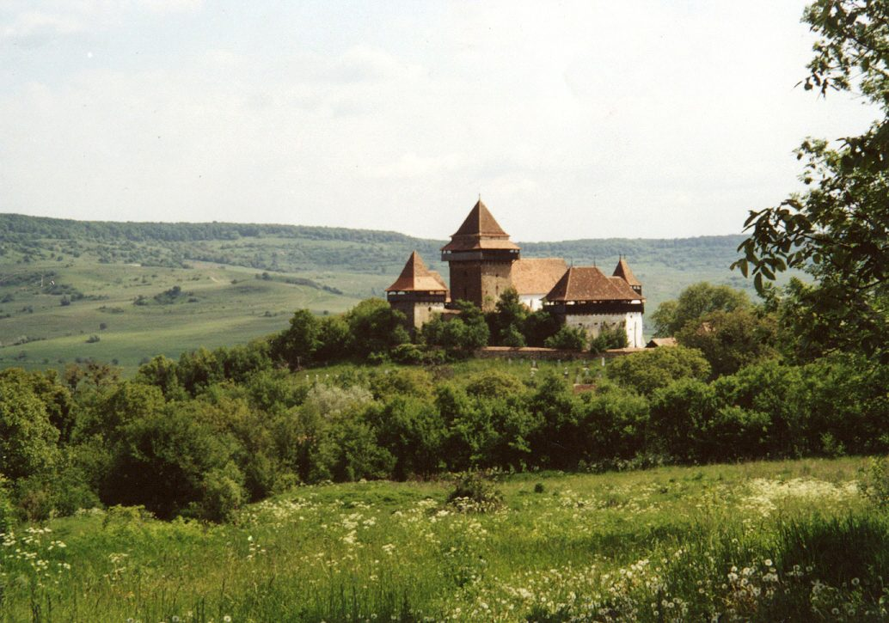
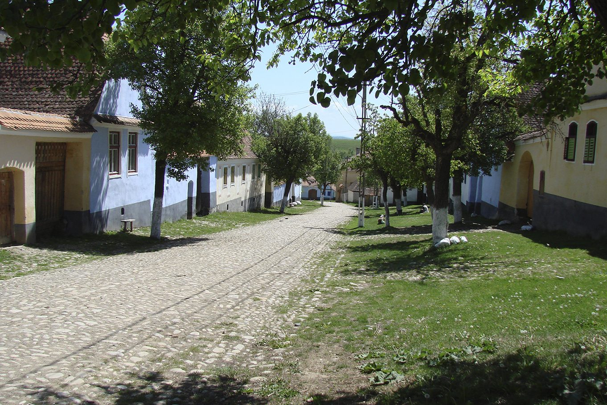
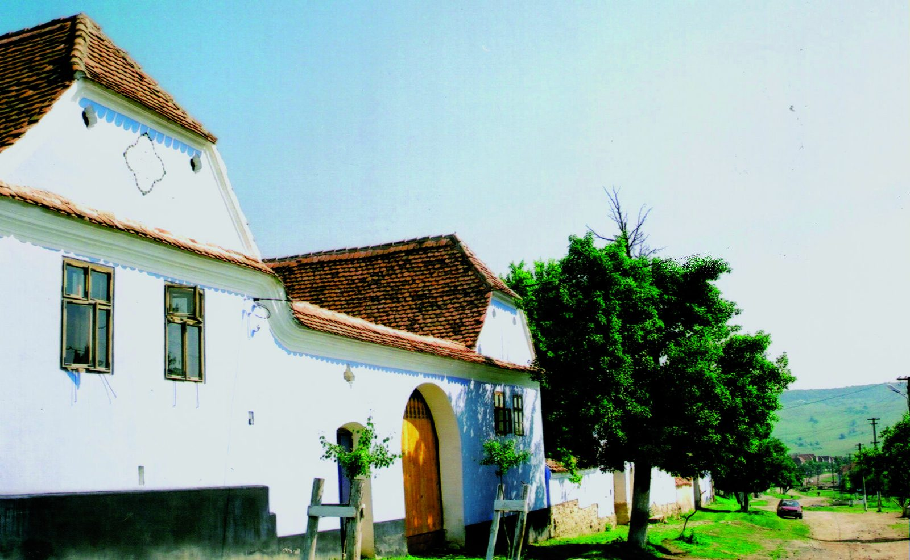
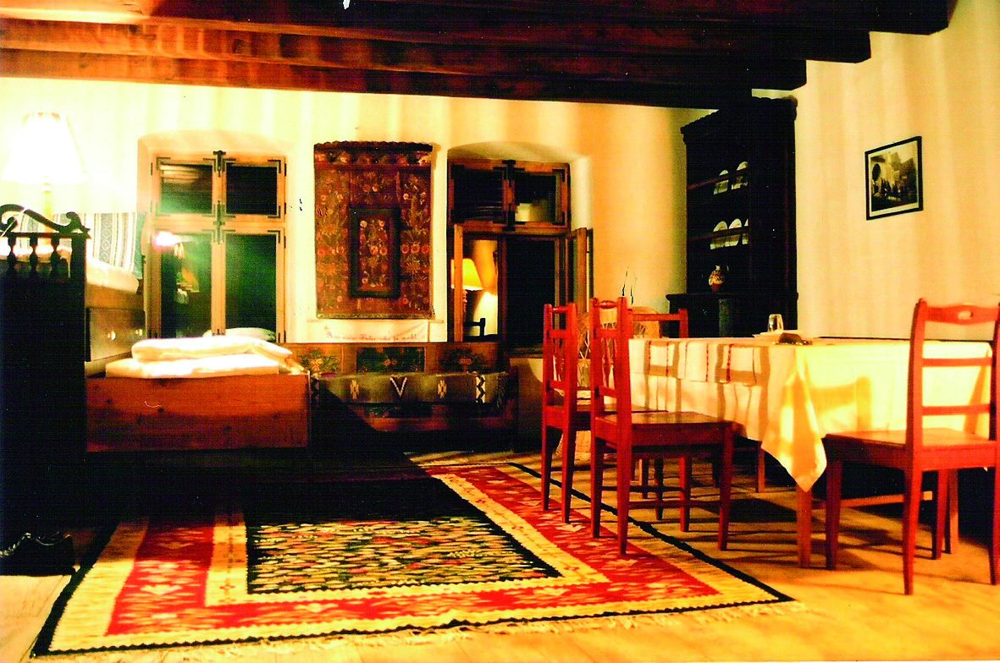

Viscri


The village lies in the heart of Transylvania, north-west of Brasov. Set in a lovely valley, this is a perfect starting point to visit Mesendorf, Roades, Cloasterf and other Saxon villages with fortified churches. The Viscri church is UNESCO designated and its origins date from 1100 when the Hungarian Szeklers first settled in the village. The Trust has restored part of the church and at least 50 facades, barns, walls and buildings in this beautifully intact village. The village has a rough bar, museum and coffee/clothes shop but no general store.


The House:63 Viscri - sleeps 4. Two separate buildings opposite each other within a courtyard - each with own shower, hot and cold running water and internal WC. Kitchen separate with wood and/or gas stove. There are an additional 7 guesthouses in Viscri. The Journey: Drive from Bucharest through Brasov, through Rupea towards Sighisoara. Turn left at Bunesti for Viscri. Duration: Approx. 4 hours.
For more details and rates Click here